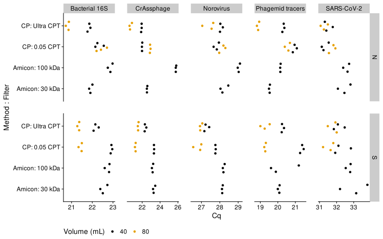
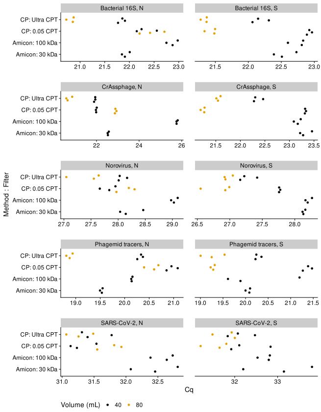

This experiment compares Amicon filters (30 kDa and 100 kDa) vs the InnovaPrep Concentrating Pipette (two tip types).
library(tidyverse)
library(googlesheets4)
library(fs)
library(here)
library(knitr)
library(broom)
# plotting helpers
library(cowplot)
library(patchwork)
library(ggbeeswarm)
theme_set(theme_cowplot())
# Okabe Ito color scheme with amber for yellow; see https://easystats.github.io/see/reference/scale_color_okabeito.html
colors_oi <- grDevices::palette.colors()
colors_oi['yellow'] <- "#F5C710"
# Custon qPCR helpers
source('_functions.R')Metadata is stored in a Google Sheet,
url <- 'https://docs.google.com/spreadsheets/d/1qBD6ZhDDtGBx1iYgcIJf6GZJhOZoS6B15vtvhJYdkoo'
meta_samples <- read_sheet(url, sheet = 'Samples', na = c("", "NA")) %>%
glimpseRows: 12
Columns: 9
$ sample_qpcr <chr> "N_30", "N_100", "N_0.05", "N_Ultra", "S_30"
$ treatment_group <dbl> 1, 2, 3, 4, 1, 2, 3, 4, 5, 6, 5, 6
$ sample_number <dbl> 1, 2, 3, 4, 5, 6, 7, 8, 9, 10, 11, 12
$ filter <chr> "30 kDa", "100 kDa", "0.05 CPT", "Ultra CPT"
$ sewer_system <chr> "N", "N", "N", "N", "S", "S", "S", "S", "N",
$ volume <dbl> 40, 40, 40, 40, 40, 40, 40, 40, 80, 80, 80,
$ amicon_mwco <dbl> 30, 100, NA, NA, 30, 100, NA, NA, NA, NA, NA
$ method <chr> "Amicon Ultra centrifugal filter", "Amicon U
$ method_short <chr> "Amicon", "Amicon", "CP", "CP", "Amicon", "Ameta_targets <- read_sheet(url, sheet = 'Targets', na = c("", "NA")) %>%
glimpseRows: 5
Columns: 2
$ target_qpcr <chr> "CrA", "phg", "Cov2", "Noro", "16S"
$ target <chr> "CrAssphage", "Phagemid tracers", "SARS-CoV-2", Results are in CSV files.
_data/16S data files/2023-06-23_CPAmicon_16S_Replicate Group Result_20230625 111656.csv
_data/16S data files/2023-06-23_CPAmicon_16S_Results_20230625 111656.csv
_data/16S data files/2023-06-23_CPAmicon_16S_Standard Curve Result_20230625 111656.csv
_data/CoV2 and Noro data files/2023-06-23_AmiconCP-COVNORO_Replicate Group Result_20230623 171728.csv
_data/CoV2 and Noro data files/2023-06-23_AmiconCP-COVNORO_Results_20230623 171728.csv
_data/CoV2 and Noro data files/2023-06-23_AmiconCP-COVNORO_Standard Curve Result_20230623 171728.csv
_data/CrA and phagemid data files/2023-06-23_CrAPhg_Replicate Group Result_20230623 171458.csv
_data/CrA and phagemid data files/2023-06-23_CrAPhg_Results_20230623 171458.csv
_data/CrA and phagemid data files/2023-06-23_CrAPhg_Standard Curve Result_20230623 171458.csvThere are three different types. Here Ill use the Standard Curve Result files, which include what is in the Results files but also have standard curve (SC) calibrations,
[1] "2023-06-23_CPAmicon_16S_Standard Curve Result_20230625 111656.csv"
[2] "2023-06-23_AmiconCP-COVNORO_Standard Curve Result_20230623 171728.csv"
[3] "2023-06-23_CrAPhg_Standard Curve Result_20230623 171458.csv" results <- results_raw %>%
rename(target_qpcr = target) %>%
left_join(meta_samples, by = c('sample' = 'sample_qpcr')) %>%
left_join(meta_targets, by = 'target_qpcr') %>%
mutate(
across(c(treatment_group, amicon_mwco, volume, method_short, filter), as.factor),
across(method_short, ~fct_relevel(.x, 'Amicon')),
across(filter, ~fct_relevel(.x, '30 kDa')),
method_filter = interaction(method_short, filter, drop = TRUE, sep = ': ', lex.order = TRUE)
)# A tibble: 5 3
task cq_status n
<chr> <chr> <int>
1 NTC Determined 3
2 NTC Undetermined 5
3 STANDARD Determined 29
4 STANDARD Undetermined 1
5 UNKNOWN Determined 180In this experiment, the Cq value was determined for all the non-control samples.
# A tibble: 5 3
target_qpcr target n
<chr> <chr> <int>
1 16S Bacterial 16S 54
2 Cov2 SARS-CoV-2 54
3 CrA CrAssphage 36
4 Noro Norovirus 38
5 phg Phagemid tracers 36Load amplification data,
TODO: find a better way to import the amplification data and results at the same time
Get the baseline coordinates for plotting,
The source samples are either from the N or S sewer system.
The treatment group is determined by
# A tibble: 7 5
treatment_group method_short filter volume n
<fct> <fct> <fct> <fct> <int>
1 1 Amicon 30 kDa 40 30
2 2 Amicon 100 kDa 40 30
3 3 CP 0.05 CPT 40 30
4 4 CP Ultra CPT 40 30
5 5 CP 0.05 CPT 80 30
6 6 CP Ultra CPT 80 30
7 <NA> <NA> <NA> <NA> 38For these plots, in cases where the Cq value could not be determined, I set the value to 40.
results %>%
filter(!is.na(treatment_group)) %>%
mutate(cq = ifelse(is.na(cq), 40, cq)) %>%
ggplot(aes(x = cq, y = method_filter, color = volume)) +
theme(
legend.position = 'bottom',
panel.spacing = unit(2, 'char'),
# panel.spacing.x = unit(4, 'char'),
) +
scale_x_continuous(n.breaks = 4) +
labs(
y = 'Method : Filter',
x = 'Cq',
color = 'Volume (mL)',
) +
facet_grid(sewer_system ~ target, scales = 'free') +
scale_color_manual(values = colors_oi %>% unname) +
geom_quasirandom()
results %>%
filter(!is.na(treatment_group)) %>%
mutate(cq = ifelse(is.na(cq), 40, cq)) %>%
ggplot(aes(x = cq, y = method_filter, color = volume)) +
# theme_minimal_vgrid() +
theme(
legend.position = 'bottom',
panel.spacing = unit(2, 'char'),
# panel.spacing.x = unit(4, 'char'),
) +
labs(
y = 'Method : Filter',
x = 'Cq',
color = 'Volume (mL)',
) +
# facet_grid(sewer_system ~ target, scales = 'free') +
facet_wrap(
target ~ sewer_system , scales = 'free_x', ncol = 2,
labeller = function(x) label_value(x, multi_line = FALSE)
) +
scale_color_manual(values = colors_oi %>% unname) +
geom_quasirandom()
Note that for the CP 0.05 um filter, it appears that the 80mL sample led to a lower concentration for the four naturally-occurring targets (Bacterial 16S, CrAssphage, Norovirus, and SARS2). This is surprising and the only one of four 80mL samples where the measured concentrations were lower. Might this indicate a mistake in the sample preparation?
The N Amicon 100 sample led to much lower measured concentrations than the N Amicon 30 sample for everything except SARS2. Possibly there was a handling error or the Amicon filter was defective.
delta_rn_min <- 1e-3
ct_threshold <- results %>% filter(target == 'SARS-CoV-2') %>% pull(threshold) %>% unique
stopifnot(length(ct_threshold) == 1)
amp %>%
filter(
target == 'SARS-CoV-2',
!is.na(treatment_group)
) %>%
ggplot(aes(cycle_number, pmax(d_rn, delta_rn_min), color = method_filter)) +
facet_grid(sewer_system ~ volume, scales = 'free') +
scale_color_manual(values = colors_oi %>% unname) +
scale_y_log10() +
geom_line(aes(group = well)) +
geom_hline(yintercept = ct_threshold, alpha = 0.3) +
# scale_color_brewer(type = 'qual') +
# geom_point(data = baselines, aes(shape = baseline_boundary), size = 3) +
# scale_shape_manual(values = c(1, 4)) +
labs(y = 'Delta Rn', x = 'Cycle', color = 'Target')In this results output, only the 16S and SARS2 results have standard curves loaded and calibrated concentrations estimated,
# A tibble: 7 4
target `is.na(slope)` `is.na(quantity)` n
<chr> <lgl> <lgl> <int>
1 Bacterial 16S FALSE FALSE 51
2 Bacterial 16S FALSE TRUE 3
3 CrAssphage TRUE TRUE 36
4 Norovirus TRUE TRUE 38
5 Phagemid tracers TRUE TRUE 36
6 SARS-CoV-2 FALSE FALSE 51
7 SARS-CoV-2 FALSE TRUE 3I believe that is because only these two targets had SC controls run in this experiment, and old SCs were not loaded into the software. Ill make the plot as if all targets had SCs and calibrated concentration estimates, for illustration purposes.
results %>%
filter(!is.na(treatment_group)) %>%
ggplot(aes(x = quantity, y = method_filter, color = volume)) +
theme(
legend.position = 'bottom',
panel.spacing = unit(2, 'char'),
# panel.spacing.x = unit(4, 'char'),
) +
scale_x_log10() +
labs(
y = 'Method : Filter',
x = 'Concentration',
color = 'Volume (mL)',
) +
facet_grid(sewer_system ~ target, scales = 'free') +
scale_color_manual(values = colors_oi %>% unname) +
geom_quasirandom()Note that concentration varies in opposition to exp(Cq); it is higher when Cq is lower.
sars2 <- results %>% filter(target == 'SARS-CoV-2')
sc_params <- sars2 %>% select(y_intercept, slope) %>% distinct %>% unlist %>% printy_intercept slope
39.1983 -3.0463 For the SC controls, the sample name records the concentration (Im unsure on the units).
Note that the Cq wasnt determined for one of the SC controls, so well need to decide how to treat that.
# A tibble: 4 3
task cq_status n
<chr> <chr> <int>
1 NTC Undetermined 3
2 STANDARD Determined 14
3 STANDARD Undetermined 1
4 UNKNOWN Determined 36A simple but potentially misleading thing to do is drop that data point (also what Rs lm() function does by default).
To fit the standard curve with standard linear regression in R, we can use the lm() function.
(Intercept) conc_log10
39.198343 -3.046335 sc_paramsy_intercept slope
39.1983 -3.0463 This approach mathces the SC from QuantStudios output, suggesting that simple linear regression, omitting the missing data point, was also used by OH in QuantStudio.
Lets plot the fitted line with the data.
sars2_sc %>%
ggplot(aes(log10(conc), cq)) +
# geom_abline(
# intercept = sc_params['y_intercept'],
# slope = sc_params['slope'],
# ) +
geom_abline(
intercept = coef(fit)[1],
slope = coef(fit)[2],
linetype = 2
) +
geom_point(alpha = 0.5)The outlier point at the second-lowest concentration still seems to be having a big impact on the fit. In future, we can consider using more robust regression methods to handle this situation as well as the drop-out/undetermined Cq.
To perform a SC calibration on the samples with unknown concentrations, we can apply the inverse function of the fitted line to get log10(conc), and then take 10 raised to this number.
Lets compare to the quantity column to confirm that were getting the same result as the software for the unknown samples,
sars2_cal %>%
filter(task != 'NTC') %>%
ggplot(aes(conc_hat, quantity, color = task)) +
scale_color_manual(values = colors_oi[2:3] %>% unname) +
scale_y_log10() +
scale_x_log10() +
geom_point()What about estimating the efficiency from the SC? The estimate from the QuantStudio software is
Note that the software resports the efficiency as a percentage (here, about 113%).
We can also estimate the efficiency from the slope of the standard curve using the standard formula,
efficiency_hat <- (10^(-1/slope) - 1) * 100
efficiency_hat conc_log10
112.943 We can form interval estimates from a confidence interval on the slope estiamte. For example, a 90% confidence interval,
slope_ci <- confint(fit, parm = 'conc_log10', level = 0.9)
efficiency_ci <- (10^(-1/slope_ci) - 1) * 100
efficiency_ci 5 % 95 %
conc_log10 102.943 125.0085Fit linear model to assess the effect of conditions on the Cq value on each target. Quick but perhaps unreliable analysis.
Measure effect on average Cq value of the concentration treatment relative to the Amicon 30 kDa treatment. A positive effect corresponds to a decrease in concentration.
fits <- results %>%
filter(!is.na(treatment_group), volume == 40) %>%
summarize(
.by = c(target, method_short, method_filter, sewer_system),
across(cq, mean)
) %>%
nest(.by = target) %>%
mutate(.keep = 'unused',
fit = map(data, ~lm(data = .x, cq ~ sewer_system + method_filter)),
# fit_tidy = map(fit, broom::tidy)
)
fits_summary <- fits %>%
mutate(.keep = 'unused',
tidy = map(fit, broom::tidy)
) %>%
unnest(tidy)fits_summary %>%
filter(str_detect(term, 'method_filter')) %>%
mutate(
method_filter = str_replace(term, 'method_filter', '')
) %>%
select(target, method_filter, estimate, std.error, p.value) # A tibble: 15 5
target method_filter estimate std.error p.value
<chr> <chr> <dbl> <dbl> <dbl>
1 Bacterial 16S Amicon: 100 kDa 0.576 0.246 0.101
2 Bacterial 16S CP: 0.05 CPT 0.390 0.246 0.211
3 Bacterial 16S CP: Ultra CPT -0.222 0.246 0.433
4 SARS-CoV-2 Amicon: 100 kDa -0.0981 0.249 0.720
5 SARS-CoV-2 CP: 0.05 CPT -0.954 0.249 0.0313
6 SARS-CoV-2 CP: Ultra CPT -0.937 0.249 0.0328
7 Norovirus Amicon: 100 kDa 0.446 0.306 0.241
8 Norovirus CP: 0.05 CPT -0.385 0.306 0.298
9 Norovirus CP: Ultra CPT -0.507 0.306 0.196
10 CrAssphage Amicon: 100 kDa 1.54 1.25 0.307
11 CrAssphage CP: 0.05 CPT -0.276 1.25 0.840
12 CrAssphage CP: Ultra CPT -0.796 1.25 0.569
13 Phagemid tracers Amicon: 100 kDa 0.395 0.194 0.134
14 Phagemid tracers CP: 0.05 CPT 1.38 0.194 0.00572
15 Phagemid tracers CP: Ultra CPT 0.502 0.194 0.0807 fits_summary %>%
filter(
str_detect(term, 'method_filter'),
# str_detect(term, 'CP:'),
) %>%
mutate(
method_filter = str_replace(term, 'method_filter', '')
) %>%
ggplot(aes(y = target, x = estimate,
xmin = estimate - 2 * std.error,
xmax = estimate + 2 * std.error,
color = method_filter
)) +
scale_color_manual(values = colors_oi %>% unname) +
geom_vline(xintercept = 0, color = 'grey') +
geom_pointrange(position = ggstance::position_dodgev(height = 0.3))sessioninfo::session_info() Session info
setting value
version R version 4.3.1 (2023-06-16)
os Arch Linux
system x86_64, linux-gnu
ui X11
language (EN)
collate en_US.UTF-8
ctype en_US.UTF-8
tz America/New_York
date 2023-07-03
pandoc 3.1.2 @ /usr/bin/ (via rmarkdown)
Packages
package * version date (UTC) lib source
askpass 1.1 2019-01-13 [1] CRAN (R 4.0.0)
backports 1.4.1 2021-12-13 [1] CRAN (R 4.1.2)
beeswarm 0.4.0 2021-06-01 [1] CRAN (R 4.1.0)
bit 4.0.5 2022-11-15 [1] CRAN (R 4.3.0)
bit64 4.0.5 2020-08-30 [1] CRAN (R 4.0.2)
broom * 1.0.5 2023-06-09 [1] CRAN (R 4.3.0)
bslib 0.5.0 2023-06-09 [1] CRAN (R 4.3.0)
cachem 1.0.8 2023-05-01 [1] CRAN (R 4.3.0)
cellranger 1.1.0 2016-07-27 [1] CRAN (R 4.0.0)
cli 3.6.1 2023-03-23 [1] CRAN (R 4.3.0)
codetools 0.2-19 2023-02-01 [2] CRAN (R 4.3.1)
colorspace 2.1-0 2023-01-23 [1] CRAN (R 4.3.0)
cowplot * 1.1.1 2021-08-27 [1] Github (wilkelab/cowplot@555c9ae)
crayon 1.5.2 2022-09-29 [1] CRAN (R 4.2.1)
curl 5.0.1 2023-06-07 [1] CRAN (R 4.3.0)
digest 0.6.31 2022-12-11 [1] CRAN (R 4.3.0)
distill 1.5.2 2022-11-10 [1] Github (rstudio/distill@9c1a1a2)
downlit 0.4.2 2022-07-05 [1] CRAN (R 4.2.1)
dplyr * 1.1.2 2023-04-20 [1] CRAN (R 4.3.0)
evaluate 0.21 2023-05-05 [1] CRAN (R 4.3.0)
fansi 1.0.4 2023-01-22 [1] CRAN (R 4.3.0)
farver 2.1.1 2022-07-06 [1] CRAN (R 4.2.1)
fastmap 1.1.1 2023-02-24 [1] CRAN (R 4.3.0)
forcats * 1.0.0 2023-01-29 [1] CRAN (R 4.3.0)
fs * 1.6.2 2023-04-25 [1] CRAN (R 4.3.0)
gargle 1.5.0 2023-06-10 [1] CRAN (R 4.3.0)
generics 0.1.3 2022-07-05 [1] CRAN (R 4.2.1)
ggbeeswarm * 0.7.2 2023-04-29 [1] CRAN (R 4.3.0)
ggplot2 * 3.4.2 2023-04-03 [1] CRAN (R 4.3.0)
ggstance 0.3.6 2022-11-16 [1] CRAN (R 4.3.0)
glue 1.6.2 2022-02-24 [1] CRAN (R 4.2.0)
googledrive 2.1.1 2023-06-11 [1] CRAN (R 4.3.0)
googlesheets4 * 1.1.1 2023-06-11 [1] CRAN (R 4.3.0)
gtable 0.3.3 2023-03-21 [1] CRAN (R 4.3.0)
here * 1.0.1 2020-12-13 [1] CRAN (R 4.0.5)
highr 0.10 2022-12-22 [1] CRAN (R 4.3.0)
hms 1.1.3 2023-03-21 [1] CRAN (R 4.3.0)
htmltools 0.5.5 2023-03-23 [1] CRAN (R 4.3.0)
httr 1.4.6 2023-05-08 [1] CRAN (R 4.3.0)
janitor 2.2.0 2023-02-02 [1] CRAN (R 4.3.0)
jquerylib 0.1.4 2021-04-26 [1] CRAN (R 4.1.0)
jsonlite 1.8.5 2023-06-05 [1] CRAN (R 4.3.0)
knitr * 1.43 2023-05-25 [1] CRAN (R 4.3.0)
labeling 0.4.2 2020-10-20 [1] CRAN (R 4.0.3)
lifecycle 1.0.3 2022-10-07 [1] CRAN (R 4.2.1)
lubridate * 1.9.2 2023-02-10 [1] CRAN (R 4.3.0)
magrittr 2.0.3 2022-03-30 [1] CRAN (R 4.2.0)
memoise 2.0.1 2021-11-26 [1] CRAN (R 4.1.2)
munsell 0.5.0 2018-06-12 [1] CRAN (R 4.0.0)
nvimcom * 0.9-144 2023-07-02 [1] local
openssl 2.0.6 2023-03-09 [1] CRAN (R 4.2.3)
patchwork * 1.1.2 2022-08-19 [1] CRAN (R 4.2.1)
pillar 1.9.0 2023-03-22 [1] CRAN (R 4.3.0)
pkgconfig 2.0.3 2019-09-22 [1] CRAN (R 4.0.0)
plyr 1.8.8 2022-11-11 [1] CRAN (R 4.3.0)
purrr * 1.0.1 2023-01-10 [1] CRAN (R 4.2.3)
R6 2.5.1 2021-08-19 [1] CRAN (R 4.1.1)
rappdirs 0.3.3 2021-01-31 [1] CRAN (R 4.0.4)
Rcpp 1.0.10 2023-01-22 [1] CRAN (R 4.3.0)
readr * 2.1.4 2023-02-10 [1] CRAN (R 4.3.0)
rlang 1.1.1 2023-04-28 [1] CRAN (R 4.3.0)
rmarkdown * 2.22 2023-06-01 [1] CRAN (R 4.3.0)
rprojroot 2.0.3 2022-04-02 [1] CRAN (R 4.2.2)
sass 0.4.6 2023-05-03 [1] CRAN (R 4.3.0)
scales 1.2.1 2022-08-20 [1] CRAN (R 4.2.1)
sessioninfo 1.2.2 2021-12-06 [1] CRAN (R 4.1.2)
snakecase 0.11.0 2019-05-25 [1] CRAN (R 4.0.0)
stringi 1.7.12 2023-01-11 [1] CRAN (R 4.3.1)
stringr * 1.5.0 2022-12-02 [1] CRAN (R 4.3.0)
tibble * 3.2.1 2023-03-20 [1] CRAN (R 4.3.0)
tidyr * 1.3.0 2023-01-24 [1] CRAN (R 4.3.0)
tidyselect 1.2.0 2022-10-10 [1] CRAN (R 4.2.1)
tidyverse * 2.0.0 2023-02-22 [1] CRAN (R 4.3.0)
timechange 0.2.0 2023-01-11 [1] CRAN (R 4.3.0)
tzdb 0.4.0 2023-05-12 [1] CRAN (R 4.3.0)
utf8 1.2.3 2023-01-31 [1] CRAN (R 4.3.0)
vctrs 0.6.2 2023-04-19 [1] CRAN (R 4.3.0)
vipor 0.4.5 2017-03-22 [1] CRAN (R 4.0.0)
vroom 1.6.3 2023-04-28 [1] CRAN (R 4.3.0)
withr 2.5.0 2022-03-03 [1] CRAN (R 4.2.0)
xfun 0.39 2023-04-20 [1] CRAN (R 4.3.0)
yaml 2.3.7 2023-01-23 [1] CRAN (R 4.3.0)
[1] /home/michael/.local/lib/R/library
[2] /usr/lib/R/library